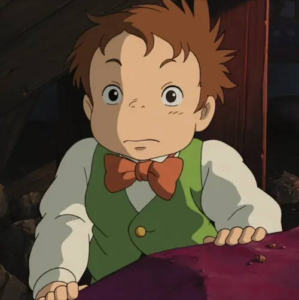

Sophie Hatter
The brave and kind-hearted young woman cursed to become an old lady. Sophie’s determination and warmth change the lives of those around her.
Howl Jenkins Pendragon
A mysterious and powerful wizard who avoids responsibility. Beneath his vanity, Howl has a loyal and courageous heart.
Calcifer
A fire demon bound to Howl’s castle, full of sarcasm and wit. Calcifer plays a key role in breaking the curses binding both him and Howl.

Markl
Howl’s young apprentice, clever and resourceful. Markl helps keep the castle running and supports Sophie in her journey.
Witch of the Waste
Once a powerful sorceress and antagonist, the Witch’s obsession with Howl leads to her downfall and transformation.